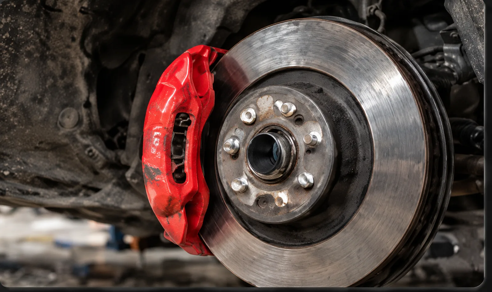

Diagnostics
Warning lights, no-starts, noises, leaks, poor performance, battery, starting, and electrical concerns.
Mobile car and truck repair
Jaden can come to your home, workplace, or vehicle location for suitable diagnostics, maintenance, and repairs. When a job needs different equipment or working conditions, he may ask you to bring the vehicle to the Port Credit shop.
416-577-8237jadensauthoanddetailing@gmail.com
Suitable mobile work
Warning lights, no-starts, noises, leaks, poor performance, battery, starting, and electrical concerns.
Oil and filter changes, selected tune-up work, mounted seasonal tire swaps, and routine service.
Selected brake, suspension, parts-replacement, and mechanical jobs when the location is suitable.
Your location
Port Credit shop
A mobile request does not mean every repair will be attempted outside. Jaden reviews the symptoms and work first. He will tell you if he can come to you or if the vehicle should be brought to the Port Credit shop.
Service area
Availability depends on the requested work, vehicle location, and schedule. Include the exact area and whether the vehicle is in a driveway, workplace lot, underground garage, roadside location, or another setting.
Request service
Include the year, make and model, location, symptoms, and service needed. Jaden confirms the appointment directly.